The Barrier of Mu
Meditation blockers, prayer bridges, levitation, and the first hard choices.
iPad-only puzzle ritual
Shramana Project turns classic sacrifice-routing into a meditative arcade ritual: assign scarce monk abilities, let most of the crowd go, and deliver one survivor to the Nirvana Gate.
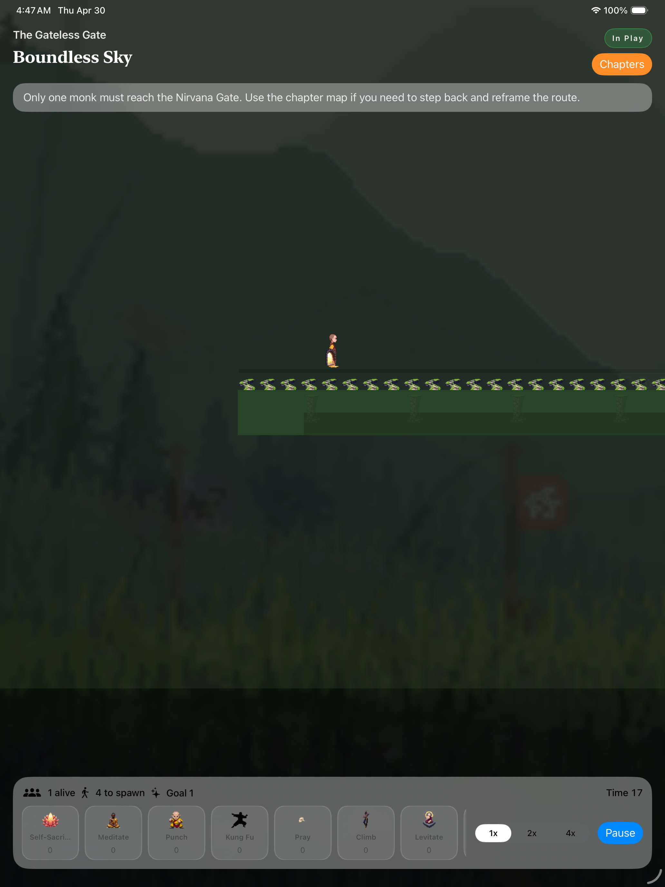
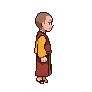
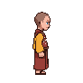
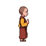
pray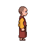
teleport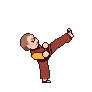
break become almost nothingFour chapters, one impossible exit
Forest foothills, temple courtyards, bamboo mountains, caves, rooftops, and cosmic dreamscapes each bend the same rule: there is a crowd, a gate, and never enough tokens.
Meditation blockers, prayer bridges, levitation, and the first hard choices.
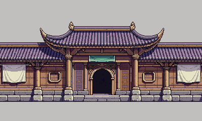
Chapter IIKung fu barriers, fox-switch karma, moving platforms, and lantern routes.
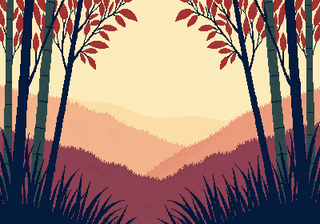
Chapter IIIInvisible paths, mirror logic, pressure plates, and astral switch work.
Portals, paradox routing, all-systems convergence, and the quiet epilogue.
Real build captures
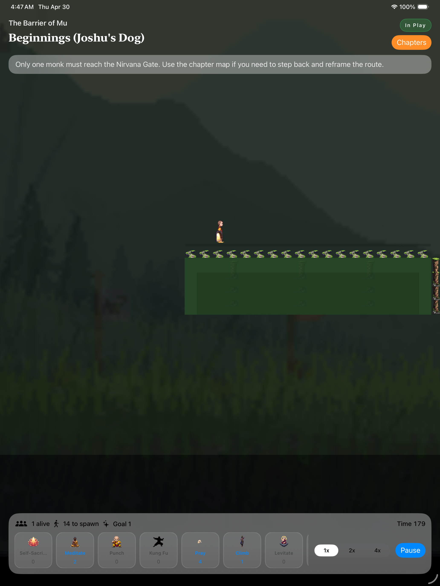
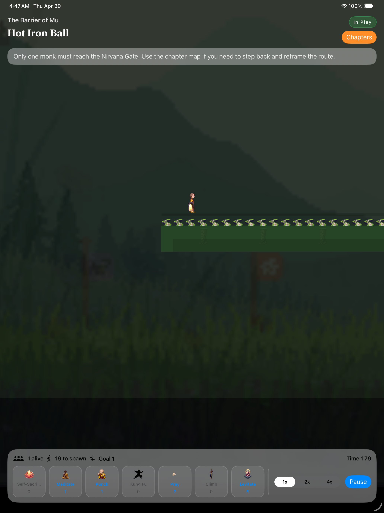
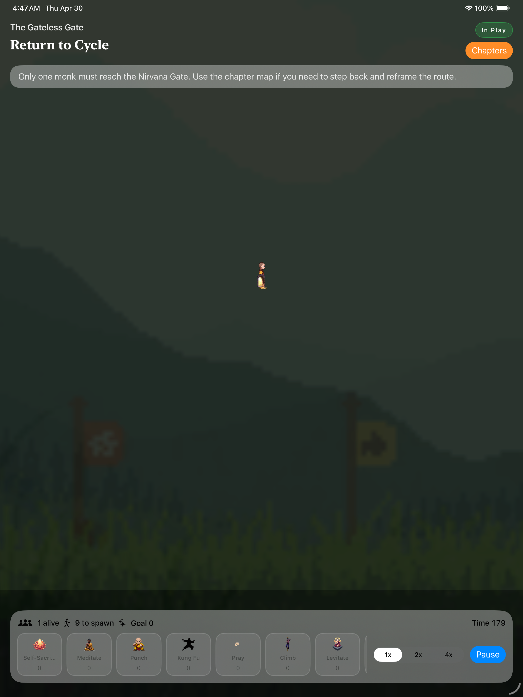
Ability altar
Become a living blocker and redirect the crowd.
Koan-driven structure
The first barrier becomes a routing lesson: a blocker is not a wall, it is a question.
Wrong switches create consequences, because cause and effect are not optional.
The final route is a portal sequence, a sacrifice chain, and then the gate breaks open.
PixelLab production art
The site uses the same generated monk frames, UI icons, parallax backdrops, portals, lanterns, and gate objects that are integrated into the game project.
Release status
The current repo contains the iPad app, 20 authored JSON levels, SpriteKit runtime, SwiftUI HUD, PixelLab art, tests, and build scripts. The App Store URL is intentionally not shown until the listing and signing flow are ready.